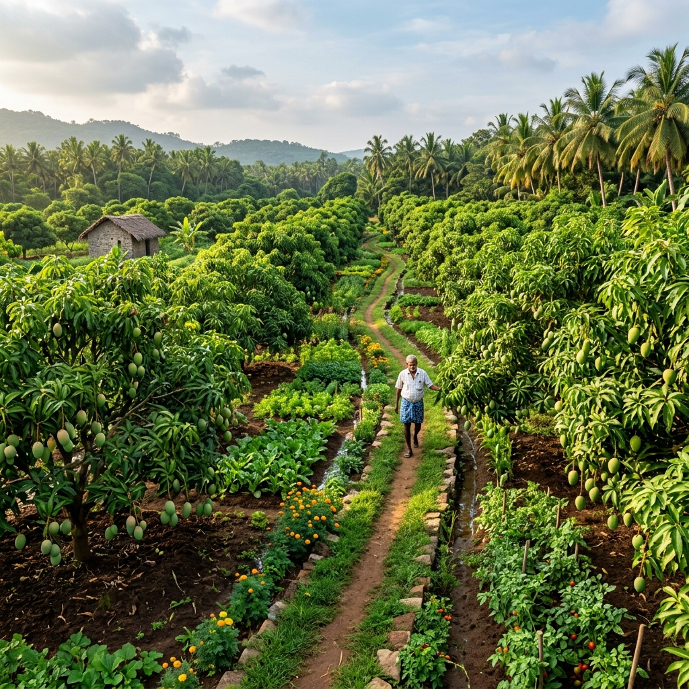
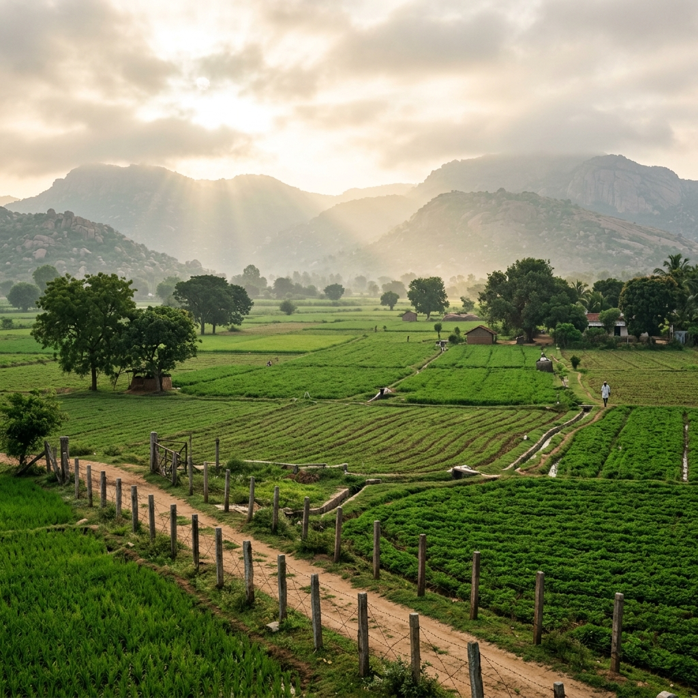
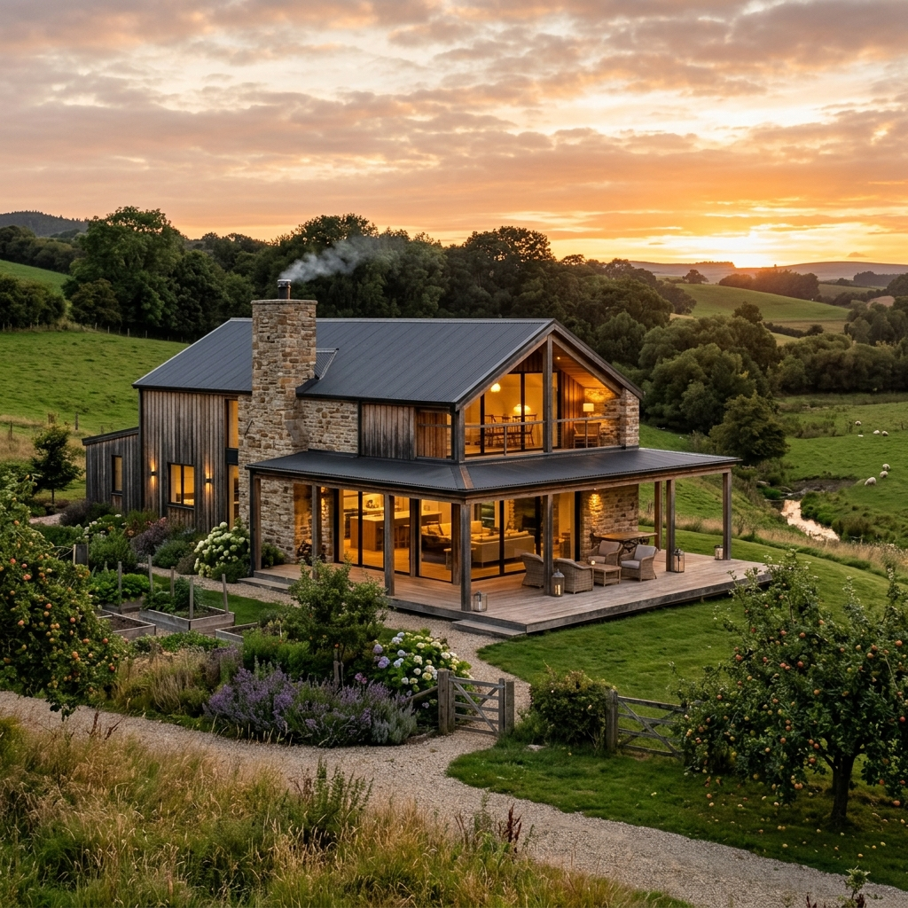
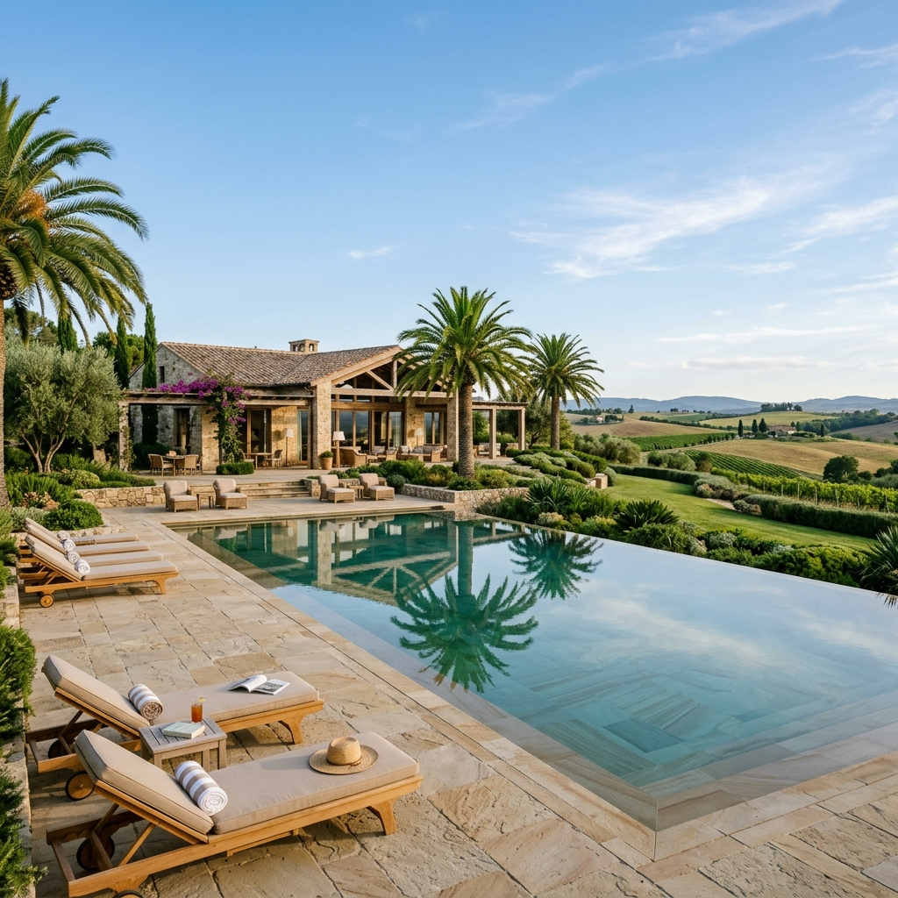

Managed farmland plots starting from 5,000 sq. ft. and above—registered in your name, professionally cultivated for you, with shared cottage stays, planned clubhouse amenities, and the option to create a custom farmhouse.
SBM Farmlands is a managed farmland ownership project near Bagepalli along the NH-44 corridor. It offers individuals and families a straightforward way to own real agricultural land—without having to personally manage day-to-day farming.
When you purchase a plot starting from 5,000 sq. ft. and above, the land is registered in your name. SBM manages agricultural upkeep and cultivation. You can discuss suitable cultivation preferences such as fruit orchards, crops, vegetables, or other suitable agricultural cultivation. When produce is harvested and sold, applicable proceeds are given to the owner according to the agreed management arrangement.
An optional farmhouse can be created on your land, and shared cottages can be pre-booked for family stays. A clubhouse and swimming pool are part of the planned project. The long-term vision is expansion up to 50 acres as the project grows.
Curious to see how it works? Come see the farmlands for yourself.
Visit the FarmlandsThe land belongs to you. SBM manages the agricultural upkeep. You can discuss what you would like to grow, farming can continue while you live in the city, and harvested produce can generate proceeds for the owner according to the agreed arrangement.
Select your farmland plot starting from 5,000 sq. ft. and above. The land is registered in your name.
Discuss what you would like to grow—fruit orchards, crops, vegetables, Sandalwood, Mahogany, or other suitable agricultural cultivation.
SBM manages the agricultural upkeep and cultivation of your farmland, handling irrigation, soil health, and routine farming operations.
When produce is harvested and sold, applicable proceeds are given to the owner according to the agreed management arrangement.
Your farmland can be cultivated in different ways. These are examples of possibilities you can discuss with us.

Create a productive orchard on your farmland. Watch the trees grow, enjoy the countryside around you, and receive harvest proceeds when fruits are harvested and sold—according to the agreed arrangement.

Sandalwood can be considered as a long-term cultivation choice alongside orchards and other farming, where it is suitable for the land.

Mahogany can be explored as another long-term timber cultivation choice, providing a slower-growing option alongside fruit trees and crops.
Seasonal crops and vegetables can be grown based on what suits the land—an active, everyday farming option you can discuss with us.
Plots from 5,000 sq. ft. and above. The land is registered in your name, with managed cultivation, possible orchard and farming choices, and an optional farmhouse.
Generous land parcels. The land is registered in your name. Larger plot sizes are also available upon request.
₹399 / SQ. FT.
Our current launch price for farmland plots.
SBM manages agricultural cultivation on your land. Discuss possible farming and orchard choices such as crops, vegetables, fruit orchards, Sandalwood, or Mahogany. Harvested produce can generate proceeds according to the agreed arrangement.
Approximately 10% of your farmland area can be used for building a farmhouse. Build it yourself, or discuss your vision with us and we can build it for you.
Contact our team to understand plot sizes, how registration works, managed cultivation options, or simply to ask questions. You can also schedule a site visit.
Book a Site VisitSBM Farmlands offers a calm countryside lifestyle—registered farmland ownership, managed agricultural cultivation, shared cottage stays, and planned community amenities.
Shared cottages can be pre-booked where you can spend a weekend, weekday or holiday with your family, away from the city.
This offers families a comfortable getaway to enjoy the farmland and surroundings—without needing to build a farmhouse first.

A clubhouse and swimming pool are part of the planned project—a place for families to gather, unwind, and enjoy time together.
Socialize with like-minded neighbors or simply relax under open skies.
Swap city pollution and concrete views for rustling leaves, fresh air, and open horizon sunsets along the NH-44 corridor near Bagepalli.
SBM Farmlands offers a healthy environment where children can run freely in open spaces and families can enjoy quiet weekend getaways.
Situated near Bagepalli along the key NH-44 highway corridor, around the Karnataka–Andhra Pradesh gateway.
Near Bagepalli • NH-44 Corridor • Karnataka–Andhra Pradesh Gateway
Walk the farmland. Explore the surroundings. Understand the managed farming model, ask your questions, and decide for yourself—there is no pressure to decide today.
Give us a call or reach out to us on WhatsApp. Tell us what you're looking for, let's understand your needs and explore the right farmland option together.
Come talk to us. Tell us what you're looking for. Come see the land. Understand how it works. Then decide for yourself.
Give us a call or reach out to us on WhatsApp. Tell us what you're looking for, let's understand your needs and explore the right farmland option together.